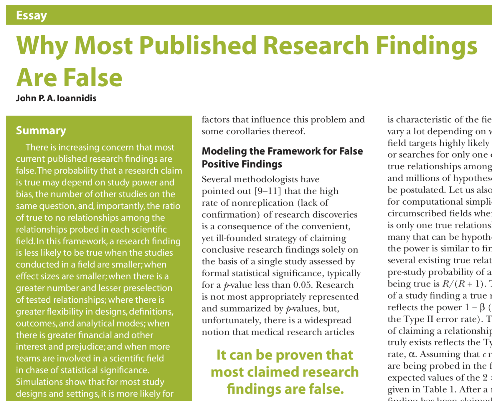
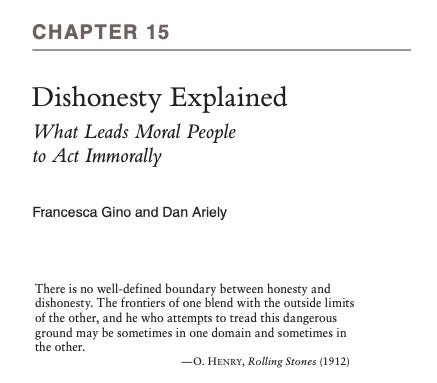
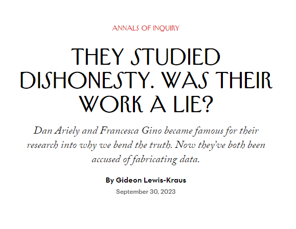
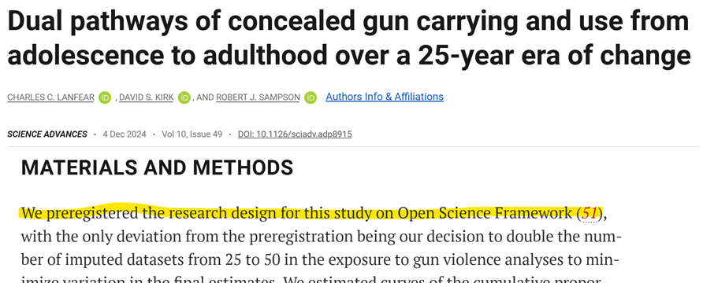
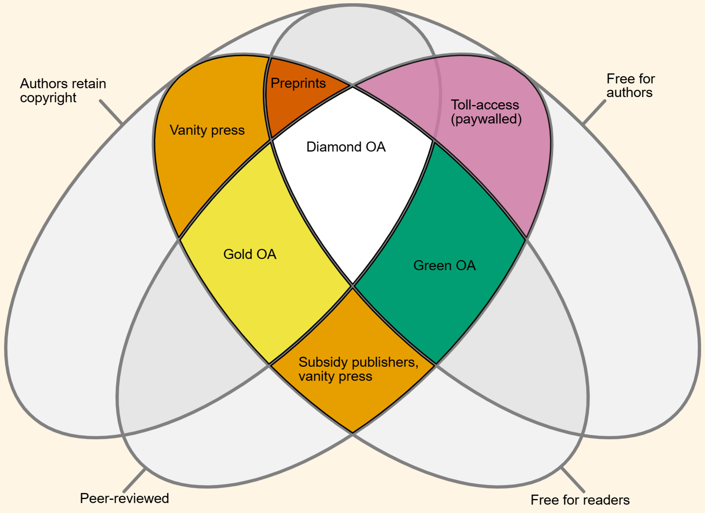
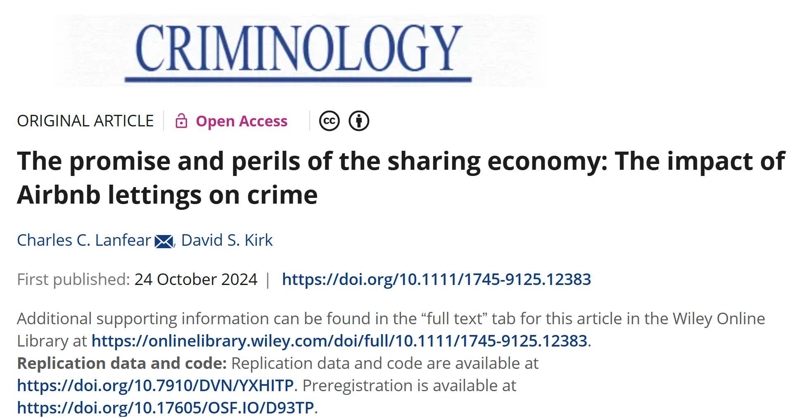
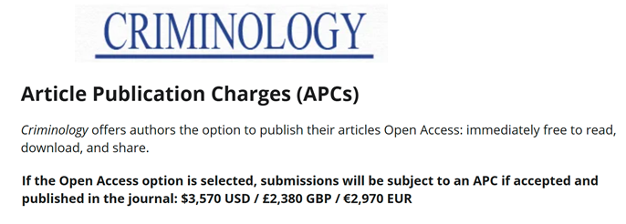
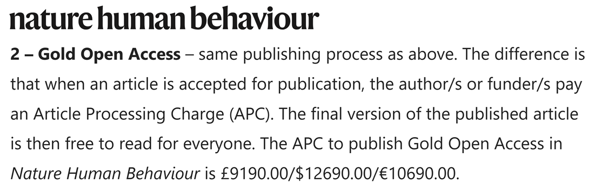
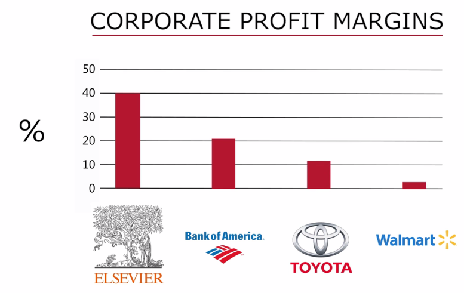

i.e., good science
University of Cambridge



an inclusive construct that combines various movements and practices aiming to make multilingual scientific knowledge openly available, accessible and reusable for everyone, to increase scientific collaborations and sharing of information for the benefits of science and society, and to open the processes of scientific knowledge creation, evaluation and communication to societal actors beyond the traditional scientific community1
Open science has many aspects
Today we focus on what researchers can do
Before doing your research:
State your question
State how you’re answering it
Commit to publishing regardless of the answer
Let’s focus on stating questions and methods first
Registrations document your research design before you start
Preregistration:
Registered reports:
Registrations aren’t set in stone… but you need to justify deviations!
Source: osf.io/3dbxw

While and after doing your research…
Goal: Make your work reproducible
Replication is running a new study to test if results from a prior study hold.
Reproducibility is rerunning the same study and getting the same results.
Reproducibility means:
Reproducible studies can still be wrong… and reproducibility makes proving studies wrong much easier.
Any study that isn’t reproducible can be trusted only on faith.
Both need documentation to be useful!
The ideal: The entire project from raw data to paper can be reproduced by anyone
For academic papers, degrees of reproducibility vary:
A portable, reproducible distribution of a project.
A literate programming document as the foundation
Files organized in a recognizable structure
Clear separation of data, method, and output
Well-documented or even preserved computational environment
We can’t always share raw data, particularly in criminology
Many barriers:
Many solutions:

Source: Jamie Farquharson




Preprints
Postprints
You can also just put it up on your website!
Open Design: Publish your methods and hypotheses in a pre-registration or submit a registered report
Open Data: Make the data as FAIR and open as possible and as closed as necessary
Open Methods: Make the analysis reproducible and publicly available
Open Access: Publish the pre-print in an open repository and the paper in an open journal
Contact:
Charles C. Lanfear
Institute of Criminology
University of Cambridge
clanfear.github.io
cl948@cam.ac.uk
Thanks to the following for sharing their materials to make mine better: